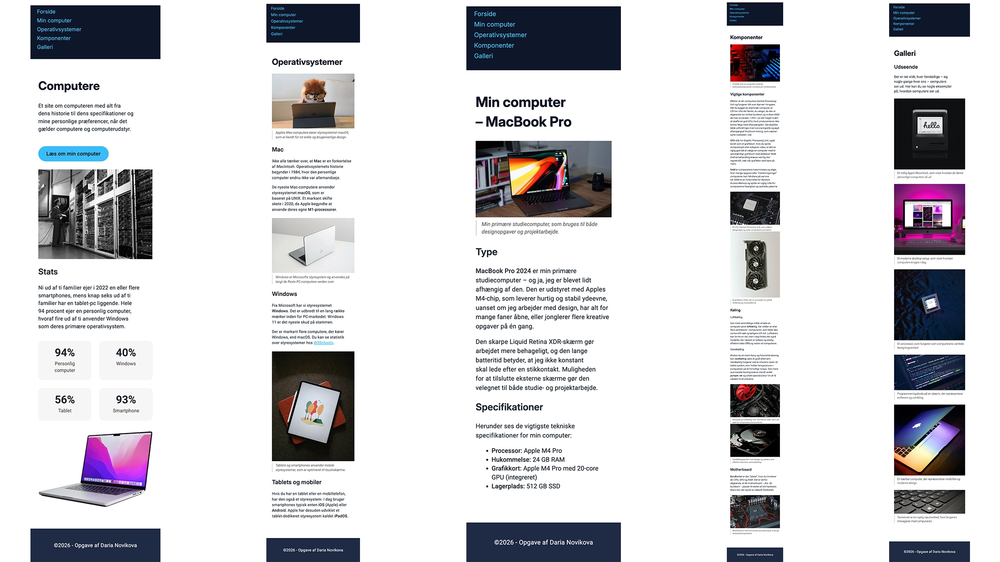
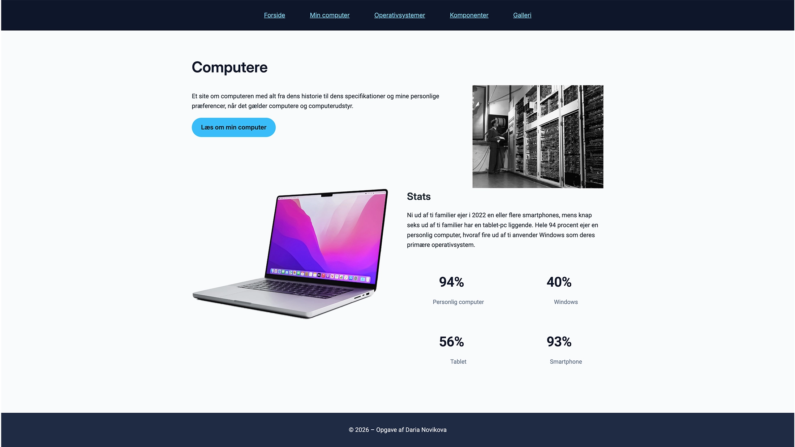

Grundlæggende web — HTML, CSS og responsivt webdesign fra bunden
Tre uger der lagde fundamentet for alt frontend-arbejde: semantisk HTML, CSS, responsivt design og designprincipper — alt sammen bygget op uge for uge fra bunden.
Jeg lærte at opbygge websites fra bunden med korrekt struktur, arbejdede med responsivt layout med Grid, Flexbox og media queries, og brugte Uge 3 på designprincipper, moodboards og en galleriøvelse i Figma og CSS.
To afleveringer — mobilsite og website
Temaet resulterede i to konkrete leverancer, der byggede direkte oven på hinanden:
- Mobilsite: Den første version af sitet kodet mobile-first ud fra udleveret wireframe og layoutdiagram. Fem HTML-sider (index, min_computer, operativsystemer, komponenter, galleri) med header, nav, main og footer. Krav om valideret HTML5, to fonte, farver og korrekt brug af margin og padding.
-
Website (studiestartsprøven): Videreudvikling af mobilsitet til også at virke på desktop. CSS opdelt i to dokumenter —
generel.csstil styling oglayout.csstil layout. Layout og id/class-navne skulle følge det udleverede layoutdiagram præcist. Afleveret som GitHub Pages-link og repository i WISEflow.
Begge opgaver stillede krav om teknisk korrekt HTML5, validering uden fejl og korrekt opsætning af metadata.
Mobilsite → desktop website
Processen fulgte en naturlig progression: mobilsite først, derefter udvidelse til desktop — præcis som mobile-first tankegangen foreskriver.
- Analyserede det udleverede wireframe og layoutdiagram og planlagde HTML-strukturen før jeg åbnede editoren
- Opbyggede de fem HTML-sider med korrekt semantisk struktur: header, nav, main, footer
- Stylede mobilversionen med farver, to fonte og margin/padding ud fra layoutdiagrammets id- og class-navne
- Validerede HTML løbende på validator.w3.org — rettede fejl undervejs frem for til sidst
- Udvidede til desktop ved at tilføje media queries og et responsivt layout i
layout.css - Separerede styling i to CSS-filer:
generel.csstil farver og typografi,layout.csstil grid og placering - Uploadede til GitHub og testede det live site på GitHub Pages inden aflevering

Fem-siders website på GitHub Pages
Det færdige website består af fem sider om computere og operativsystemer, kodet fra bunden i semantisk HTML og CSS uden frameworks — og deployed live på GitHub Pages.
- Fem validerede HTML5-sider: index, min_computer, operativsystemer, komponenter, galleri
- CSS opdelt i
generel.css(farver, typografi, spacing) oglayout.css(grid, placering, responsivt) - Layout følger det udleverede layoutdiagram med præcise id- og class-navne
- Responsivt design: mobilversion som base, desktop udvidet med media queries
min_computer.htmlindeholder eget foto og tekst om min computer- Valideret uden fejl på validator.w3.org,
noindexmeta-tag i alle siders head

Læring
Tema 2 lagde fundamentet for resten af semesteret. Det, der overraskede mig mest, var at forstå mekanikken bag HTML og CSS — ikke bare syntaksen, men hvordan browseren fortolker struktur og stil adskilt fra hinanden.
- Semantisk HTML som rygraden — struktur skal give mening uden styling
- Grid til todimensionelle layouts, Flexbox til éndimensionelle — de er ikke konkurrenter
- Media queries og mobile-first: design til den mindste skærm først, udvid derefter
- Moodboard og styletile som designredskaber der oversætter visuel retning til konkrete værdier
- Codepen som hurtig eksperimentplads for CSS-idéer inden de skrives ind i projektet
Webudvikling er et stort og komplekst felt — det lærte vi allerede i Uge 1. Det vigtigste jeg tog med var ikke at lære alle teknikker, men at forstå mekanikken godt nok til at lære nye teknikker selv.